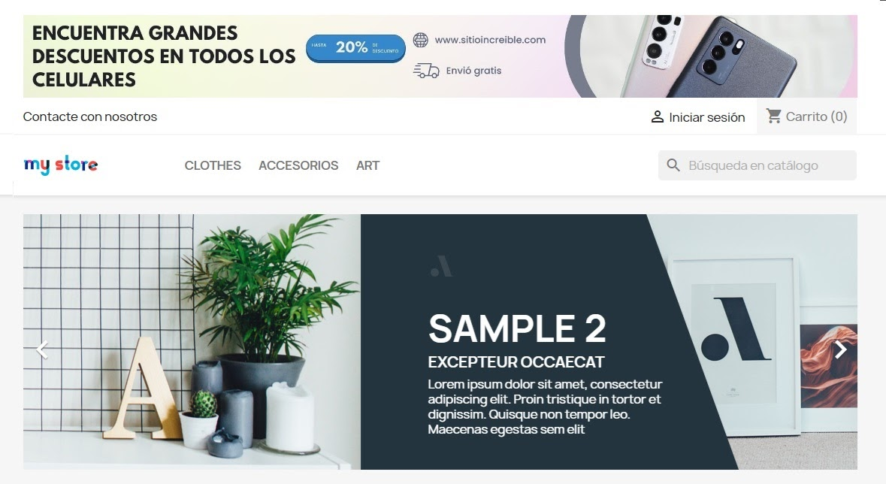
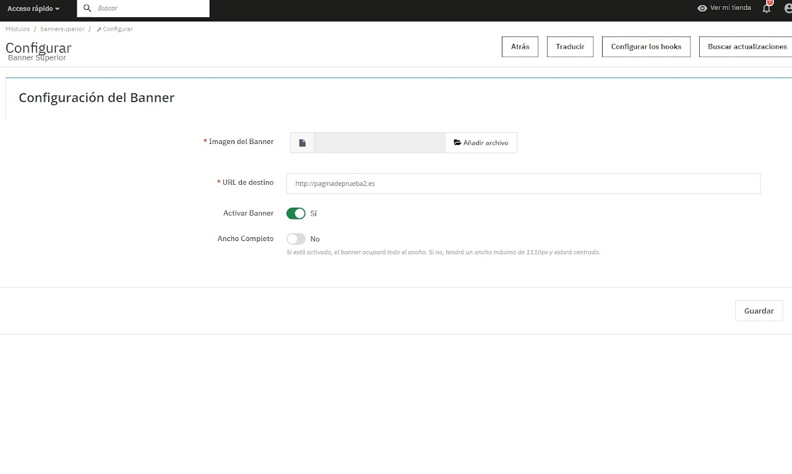

Módulo Prestashop - Banner Superior

Banner Superior versión 1.0
Este módulo permite a agregar un banner en la parte superior de tu tema o plantilla de tu sitio web en PrestaShop. Se puede instalar desde la versión 1.7.8.8 a 8.1x
Este módulo es adaptable a dispositivos móviles
$ 4.99 Dólares

Descripción:
Este módulo añade un banner en la parte superior del sitio web de PrestaShop.Características
- Permite subir una imagen personalizada para el banner
- Permite configurar una URL de destino para el banner
- Opción para activar o desactivar el banner
Instalación
1. Descarga el archivo ZIP del módulo
2. Ve al panel de administración de PrestaShop
3. Ve a "Módulos" > "Gestor de módulos"
4. Haz clic en "Subir un módulo"
5. Selecciona el archivo ZIP descargado
6. Una vez instalado, configura el módulo según tus necesidades
Configuración
1. Ve a "Módulos" > "Gestor de módulos"
2. Busca "Banner Superior" y haz clic en "Configurar"
3. Sube la imagen que deseas usar para el banner
4. Introduce la URL de destino para el banner
5. Activa o desactiva el banner según sea necesario
6. Puedes extender el tamaño de la imagen o banner si lo deseas.
7. Guarda la configuración
Nota: Si tuviera algún problema con la instalación, le brindamos el soporte gratuito. Contacte con nosotros para cualquier duda y estaremos encantados de ayudarle. Email: chrishb2000@gmail.com
Más imagenes
Ver video como se realiza la instalación